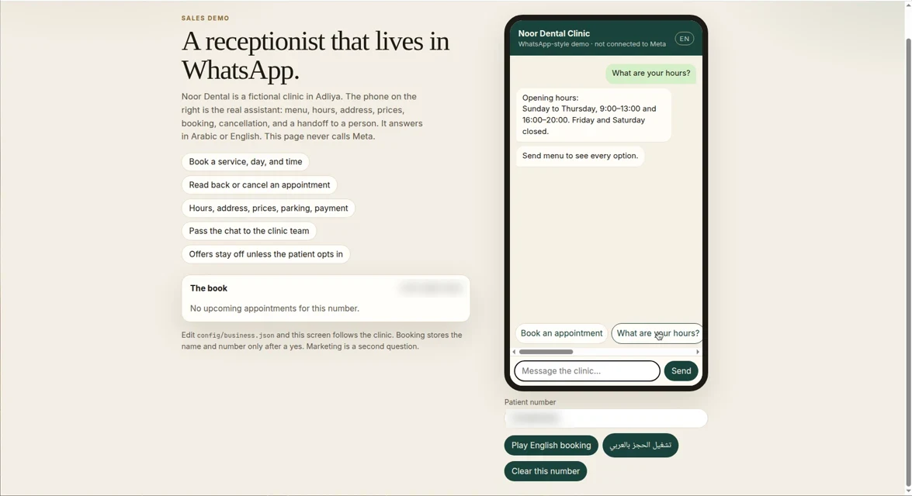
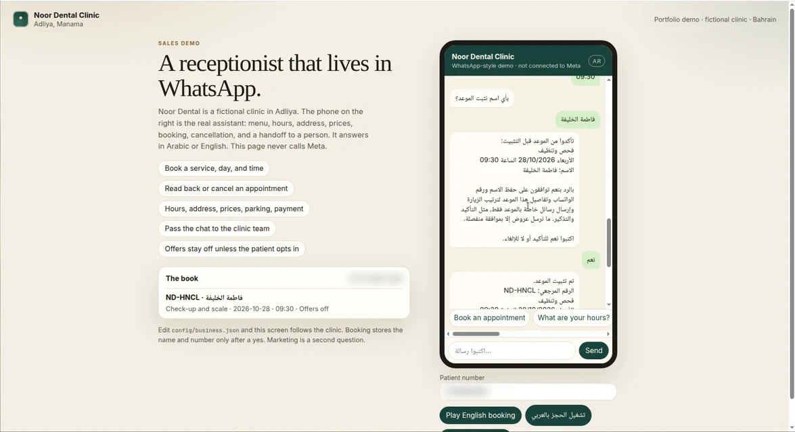

Healthcare Operations & Administration | Informatics Engineering Student | IT, Process Improvement & Digital Transformation
I work in hospital operating theatre administration, where I have been coordinating with medical and administrative teams, keeping documentation and records accurate, and training new staff since 2016. My background also includes a cyber security role at Batelco and a Network+ certification.
I am now in my second year of a BSc in Informatics Engineering at the University of Technology Bahrain. I am interested in where operations meet technology: cleaner workflows, better records and practical automation, including AI agents built with clear human approval steps.
A WhatsApp booking assistant for small clinics and salons, demoed as the fictional "Noor Dental" clinic.


A setup of three coordinated AI assistants, each with its own lane: university organisation, coursework monitoring, and career and content strategy. Lanes are kept separate so the agents don't duplicate work, and every external action (posting, sending messages, applying) waits behind an approval gate.